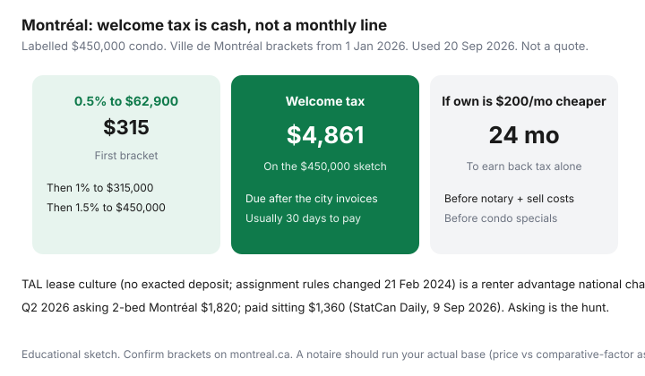

Housing · Canada
Rent vs buy in Montréal: how Québec lease rules change the trade-off
English-Canada rent-vs-buy threads treat Montréal as “Toronto but cheaper.” Then the city invoices a welcome tax, the syndicate invoices condo fees that never become equity, and a 2019 blog promises you can assign a below-market lease the way you could before 21 February 2024. Statistics Canada’s Quarterly Rent Statistics for Q2 2026 (Daily, 9 Sep 2026) put Montréal asking two-beds at $1,820 and sitting paid rents at $1,360. That gap is TAL culture, not a coastal meme.
This page is the Québec-specific stack: mutation tax, syndicate fees, insurance, and the renter advantages national charts skip. It is not a U.S. 5% rule, not a rate quote, and not a reason to panic-buy a Plateau walk-up.
Disclosure: Mortgage-rate comparison tools are an offer type some households use beside this worksheet. Saving Optimizer may earn a commission if we later add partner links. We do not currently claim lender, broker, or notary partnerships. There is no natural affiliate product for the TAL process. This framework is not mortgage, tax, legal, or brokerage advice.
Key takeaways
- Ville de Montréal mutation brackets from 1 January 2026: 0.5% to $62,900; 1% to $315,000; 1.5% to $552,300; then 2% / 2.5% / 3.5% / 4% bands. Labelled $450,000 condo ≈ $4,861.
- Q2 2026 asking 2-bed $1,820 vs paid $1,360 (StatCan Daily, 9 Sep 2026). Sitting tenants and new asks are different sports.
- Renters generally do not park a damage deposit (C.c.Q. 1904). Buyers do park welcome tax, notary, and inspection cash.
- Assignment rules changed 21 February 2024: a lessor can refuse without a “serious” reason and the lease then ends on the date you named. Mobility is not the 2019 story.
- If owning is only $200/month cheaper, welcome tax alone takes 24 months to earn back — before notary and sell costs.
Why Montréal’s rental market and lease culture differ from Toronto/Vancouver
Ontario last-month deposits and B.C. half-month caps do not travel. A lessor in Québec generally may not exact a deposit or postdated cheques (article 1904). July 1 still clusters listings, French inventory is the real inventory, and TAL — not an N1 — sets how sitting rents move. The Canada-wide worksheet already said city stacks beat national memes. Toronto’s dual land transfer tax and Vancouver’s strata-first math are the wrong templates.
Paid vs asking is the other Montréal fact. A household comparing a $1,360 sitting two-bed to a mortgage on a $450,000 condo is not making the same decision as a newcomer facing the $1,820 ask. CPI rent +2.8% year over year in August 2026 (Daily, 14 Sep 2026) is mood music.
Ownership stack: welcome tax (mutation), condo fees, insurance
Write the monthly column the national page uses — mortgage, tax, syndicate/condo fees, insurance, maintenance — then add the year-one cash Québec actually invoices:
- Welcome tax: droits de mutation on the highest of price, deed consideration, or assessed value × the city’s comparative factor (1.00 for 2026, montreal.ca). Payable after the city mails the bill, typically in one instalment within 30 days.
- Worked $450,000: 0.5% × $62,900 = $314.50; 1% × $252,100 = $2,521; 1.5% × $135,000 = $2,025; total $4,860.50 (round $4,861). A notaire should rerun the base.
- Condo / syndicate fees: the listing fee plus what the documents imply for contingency-fund catch-up. A “low-fee” tower is often a future invoice — see condo fee red flags.
- Insurance: quote the address. Comparison education only.
- Notary, inspection, moving: not a Toronto closing package. Budget cash; do not invent a lawyer’s quote from a blog.

First-time Ontario/Toronto LTT refunds do not apply. FHSA ($8,000 / $40,000, CRA) and HBP ($60,000) still change the down-payment wrapper, not the mutation bill. Pair this cash with year-one ownership costs.
Rental stack: rent increases via the TAL process (high-level overview)
Rent is the easy line. Then tenant insurance, parking, laundry, and a moving reserve. Heat-included vs hydro-extra still changes the “cheap” listing — use the lease-inclusion page.
Increases are a TAL notice-and-refusal process, not Ontario’s 2.1% guideline and not B.C.’s 2.3% limit. A tenant can refuse a proposed increase and stay; the Tribunal can then fix the rent. That is why sitting paid rents ($1,360) sit under asking ($1,820). Do not import an N1 calendar. If you are already in a unit, push back inside the legal frame instead of assuming a Toronto letter.
Mobility and lease assignment as a renter advantage
For years, Montréal renters treated assignment as a way to hand a below-market lease to a friend and leave. Bill 31 / Civil Code changes that apply to notices from 21 February 2024 let a lessor refuse assignment for a reason other than a serious one — and the lease is then resiliated on the assignment date in your notice. A 15-day silence is deemed consent. Depth lives in the 2024 assignment vs sublet guide.
That is still a mobility option owners do not have without sell costs. It is no longer a guaranteed transfer of a cheap lease. Model “I can leave without four months of double rent,” not “I can sell my rent.”
When buying still wins for long-stay households
- You can document a stay well past five years (job, school, family), not a 18-month posting.
- Welcome tax + notary + inspection are cash you can earn back on the monthly gap.
- The owned unit’s fees and location beat the rental you would actually get, not a 2018 Kijiji ghost.
- You would not put a special assessment on a card.
Qualification is a lender’s question — see the stress-test worksheet. Shelter cost is yours.
Sample break-even for Plateau vs suburbs
| Sketch | Year-one cash drag | What flips the call |
|---|---|---|
| Plateau condo $450,000 | Welcome tax ≈ $4,861 | $200/month “owning is cheaper” → 24 months on tax alone. |
| Same condo + $8,000 special in year 3 | Tax + special ≈ $12,861 | 64 months at that $200 gap — before sell costs. |
| Off-island / suburb $450,000 | Local mutation rates, not Montréal’s upper bands | Confirm the municipality. Commute and hydro can erase a cheaper tax. |
| Stay 3 years vs 10 | Notary + sell costs on top | Under five years, renting can still be the conservative money move. |
A Longueuil or Laval purchase is not “Montréal minus welcome tax.” It is a different city invoice, a different commute, and often a different hydro story. Run two stacks.
What to verify with a notaire before counting on savings
- The mutation base — price vs comparative-factor assessment — and which 2026 bracket applies.
- Exemptions (some family transfers). Do not assume a first-time buyer refund exists the way Ontario writes one.
- Syndicate documents, contingency fund, and upcoming work.
- How property taxes are adjusted on closing, and when the city’s welcome-tax invoice typically arrives.
If you stay a renter, hunt without scams, skip illegal deposits, and keep the roommate math honest. Buying later still works with an FHSA runway.
Sources & date stamps
- Ville de Montréal, How property transfer duties are calculated — 2026 brackets from 1 January 2026; comparative factor 1.00. Page used 20 Sep 2026.
- Statistics Canada, The Daily, 9 Sep 2026 — Quarterly Rent Statistics Q2 2026: Montréal asking 2-bed $1,820; paid $1,360.
- Statistics Canada, The Daily, 14 Sep 2026 — CPI August 2026: national rent +2.8% YoY.
- TAL assignment pages and Form TAL-828A — notices from 21 February 2024; 15-day reply.
- Civil Code of Québec, art. 1904 — no exacted deposit or postdated instruments.
- CMHC home-buying consumer pages; CRA FHSA / HBP ($8,000 / $40,000; $60,000).
Frequently asked questions
Does Montréal charge land transfer tax like Toronto?
It charges droits de mutation — the welcome tax — using Ville de Montréal brackets. From 1 January 2026 the first band is 0.5% to $62,900, then 1% to $315,000, 1.5% to $552,300, and steeper bands above that. On a labelled $450,000 condo that is about $4,861. It is a city invoice after closing, not Toronto’s dual LTT.
How do TAL lease rules change rent-vs-buy math?
Sitting tenants often pay less than asking rent, there is generally no exacted damage deposit (C.c.Q. 1904), and assignment rules changed on 21 February 2024. Those are renter-side cash and mobility facts a national “rent vs mortgage” chart ignores. They do not replace a five-year stay test.
What does Statistics Canada say about Montréal rents?
Quarterly Rent Statistics for Q2 2026 (Daily, 9 Sep 2026): average asking two-bedroom $1,820 and paid sitting $1,360. National rent CPI for August 2026 was +2.8% year over year (Daily, 14 Sep 2026). Use the rent you would actually pay.
When does buying in Montréal still win?
When you can document a long stay, the welcome tax and notary cash earn back, condo or syndicate fees are honest, and you are not treating a 24-month job as a ten-year hold. A notaire should check the mutation base before you count savings.
Is this mortgage or tax advice?
No. It is a household worksheet. Mutation brackets, TAL rules, and FHSA/HBP figures are high-level and date-stamped. A notaire, licensed mortgage professional, or tax advisor should check your numbers.